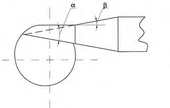
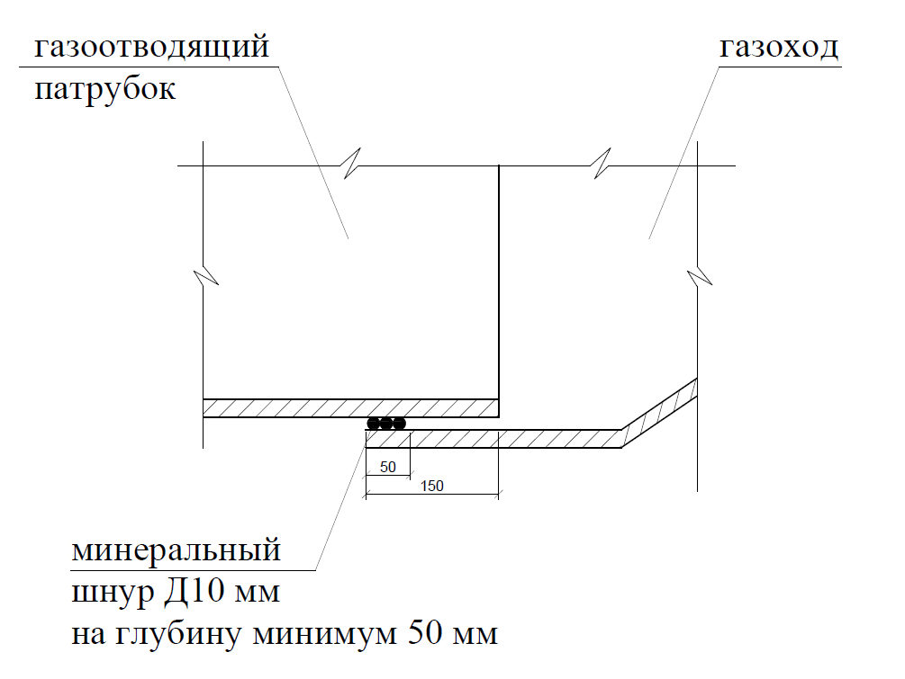
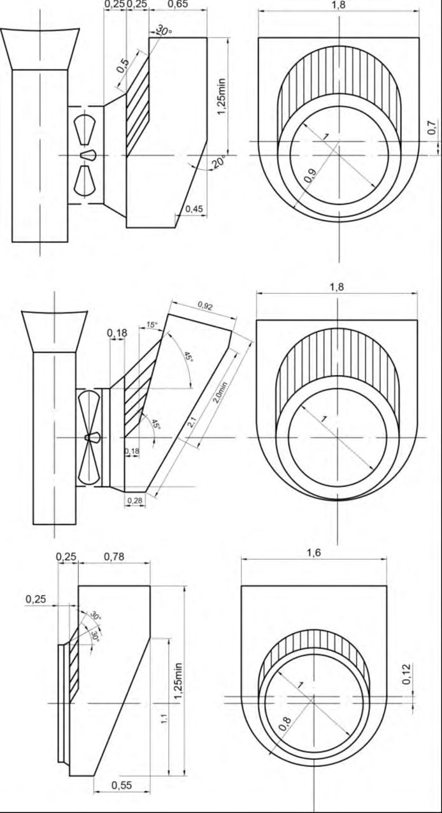

СП 346.1325800.2017 «Системы газовоздушных трактов котельных установок мощностью»
О документе: разработчики, утверждение, регистрация, ключевые слова
СВОД ПРАВИЛ СП 346.1325800.2017
Издание официальное
1 ИСПОЛНИТЕЛИ - ООО «СанТехПроект», АС «СЗ Центр АВОК», ООО «ПКБ «Теплоэнергетика»
- 2 ВНЕСЕН Техническим комитетом по стандартизации ТК 465 «Строительство»
3 ПОДГОТОВЛЕН к утверждению Департаментом градостроительной деятельности и архитектуры Министерства строительства и жилищно-коммунального хозяйства Российской Федерации (Минстрой России)
- 4 УТВЕРЖДЕН Приказом Министерства строительства и жилищно-коммунального хозяйства Российской Федерации от 15 сентября 2017 г. № 1224/пр и введен в действие с 16 марта 2018 г.
5 ЗАРЕГИСТРИРОВАН Федеральным агентством по техническому регулированию и метрологии (Росстандарт)
В случае пересмотра (замены) или отмены настоящего свода правил соответствующее уведомление будет опубликовано в установленном порядке. Соответствующая информация, уведомление и тексты размещаются также в информационной системе общего пользования - на официальном сайте разработчика (Минстрой России) в сети Интернет
© Минстрой России, 2017
Настоящий нормативный документ не может быть полностью или частично воспроизведен, тиражирован и распространен в качестве официального издания на территории Российской Федерации без разрешения Минстроя России
- 1 Область применения………………………………………..………......
- 2 Нормативные ссылки…………………………………….…………......
- 3 Термины и определения…………………………………....………........
4 Сокращения……………………………………………….........................
- 5 Общие требования к устройству системы газовоздушного тракта ....
- 6 Исходные данные и порядок проектирования систем газовоздушного тракта …………………………….................................................................
- 7 Правила расчета состава оборудования системы газовоздушного тракта………………………………………………………………………..
- 7.1 Системы воздухоподачи..................................................................
- 7.2 Системы удаления продуктов сгорания.............................................
- 7.3 Дымовые трубы..................................................................................
- 7.4 Тягодутьевые установки...................................................................
- 7.5 Материалы для изготовления газовоздушных трактов..................
- 8 Автоматизация, контроль и сигнализация.............................................
- 9 Электроснабжение и электрооборудование.........................................
- 10 Охрана окружающей среды.....................................................................
- 11 Энергоэффективность............................................................................
Приложение А Рекомендации по профилям и размерам ребер жестко- сти…………… ............................................................................................. Библиография…………….............................................……….................
СП 346.1325800.2017
Дата введения 2018-03-16
\_\_\_\_\_\_\_\_\_\_\_\_\_\_\_\_\_\_\_\_\_\_\_\_\_\_\_\_\_\_\_\_\_\_\_\_\_\_\_\_\_\_\_\_\_\_\_\_\_\_\_\_\_\_\_\_\_\_\_\_\_\_\_\_
УДК ОКС 11.140.10
Ключевые слова: воздуховоды, дымоотводы, аэродинамический расчет, дымовые трубы, тягодутьевые установки, продукты сгорания топлива, воз- дух для горения
\_\_\_\_\_\_\_\_\_\_\_\_\_\_\_\_\_\_\_\_\_\_\_\_\_\_\_\_\_\_\_\_\_\_\_\_\_\_\_\_\_\_\_\_\_\_\_\_\_\_\_\_\_\_\_\_\_\_\_\_\_\_\_\_\_
Руководитель организации-разработчика
ООО "СанТехПроект"
Технический директор \_\_\_\_\_\_\_\_\_\_\_\_\_\_\_\_\_\_\_\_\_\_\_\_ Шарипов А.Я.
Ответственный исполнитель \_\_\_\_\_\_\_\_\_\_\_\_\_\_\_\_\_\_\_\_ Богаченкова А.С.
Введение
6 ВВЕДЕН ВПЕРВЫЕ
Настоящий свод правил разработан в соответствии с Федеральным законом от 27 декабря 2002 г. № 184-ФЗ «О техническом регулировании», устанавливает требования к проектированию, строительству, реконструкции, капитальному ремонту, техническому перевооружению систем газовоздушных трактов (ГВТ) котельных тепловой мощностью до 150 МВт, а также устанавливает требования к их безопасному содержанию и эксплуатационным характеристикам, которые обеспечивают выполнения требований Федерального закона от 22 июля 2008 г. № 123-ФЗ «Технический регламент о требованиях пожарной безопасности», Федерального закона от 30 декабря 2009 г. № 384-ФЗ «Технический регламент о безопасности зданий и сооружений».
Основными приоритетами настоящего свода правил является: первостепенность требований по надежной организации подачи воздуха на горение и удаление продуктов сгорания топлива, обеспечивающих безаварийную работу котельных; защита охраняемых законом прав и интересов потребителей тепловой энергии путем регламентирования эксплуатационных характеристик систем ГВТ; применение современных эффективных технологий и новых материалов для строительства новых, реконструкции, капитальном ремонте, расширении, техническом перевооружении существующих котельных и входящих в них систем ГВТ;
Настоящий свод правил разработан авторским коллективом ООО «СанТехПроект» (руководитель работы - канд. техн. наук А.Я. Шарипов , инж. А.С. Богаченкова ), АС «СЗ Центр Авок» (д-р техн. наук, проф. А.М. Гримитлин ), OOO «ПКБ «Теплоэнергетика» (канд. техн. наук Е.Л. Палей ).
\_\_\_\_\_\_\_\_\_\_\_\_\_\_\_\_\_\_\_\_\_\_\_\_\_\_\_\_\_\_\_\_\_\_\_\_\_\_\_\_\_\_\_\_\_\_\_\_\_\_\_\_\_\_\_\_\_\_\_\_\_\_\_\_\_
СИСТЕМЫ ГАЗОВОЗДУШНЫХ ТРАКТОВ КОТЕЛЬНЫХ УСТАНОВОК МОЩНОСТЬЮ ДО 150 МВт. ПРАВИЛА ПРОЕКТИРОВАНИЯ
Systems of gas air treatments of boiler installations 150 Mw. Rules of design
\_\_\_\_\_\_\_\_\_\_\_\_\_\_\_\_\_\_\_\_\_\_\_\_\_\_\_\_\_\_\_\_\_\_\_\_\_\_\_\_\_\_\_\_\_\_\_\_\_\_\_\_\_\_\_\_\_
| [1] | Федеральный закон от 22 июля 2008 г. №123-ФЗ «Технический регламент о требованиях пожарной безопасности» |
|---|---|
| [2] | Федеральный закон от 27 декабря 2002 г. №184-ФЗ «О техниче- ском регулировании» |
| [3] | Федеральный закон от 30 декабря 2009 г. № 384-ФЗ «Техниче- ский регламент о безопасности зданий и сооружений» |
| [4] | Тепловой расчет котлов (Нормативный метод). Издание 3-е, пе- реработанное и дополненное |
| [5] | Аэродинамический расчет котельных установок. (Нормативный метод). Под редакцией С.И. Мочана. Издание третье. - Л.: «Энер- гия», 1977 |
| [6] | Методы расчетов рассеивания выбросов вредных (загрязняющих) веществ в атмосферном воздухе, утвержденных Приказом Мини- стерства природных ресурсов и экологии Российской Федерации от 6 июня 2017 г. №273 |
| [7] | Федеральные авиационные правила «Требования, предъявляемые к аэродромам, предназначенным для взлета, посадки, руления и стоянки гражданских воздушных судов», утвержденные Прика- зом Минтранса России от 25.08 2015 г. №262 |
| [8] | ПУЭ Правила устройства электроустановок |
| [9] | СН 2.2.4/2.1.8.562-96 Шум на рабочих местах, в помещениях жилых, общественных зданий и на территории жилой застройки |
| [10] | СН 2.2.4/2.1.8.566-96 Производственная вибрация, вибрация в помещениях жилых и общественных зданий |
1Область применения
2Нормативные ссылки
В настоящем своде правил использованы нормативные ссылки на сле- дующие документы:
ГОСТ 380-2005 Сталь углеродистая обыкновенного качества. Марки ГОСТ 5264-80 Ручная дуговая сварка. Соединения сварные. Основ- ные типы, конструктивные элементы и размеры
ГОСТ 5542-87 Газы горючие природные для промышленного и ком- мунально-бытового назначения. Технические условия
ГОСТ 5582-75 Прокат тонколистовой коррозионно-стойкий, жаро- стойкий и жаропрочный
\_\_\_\_\_\_\_\_\_\_\_\_\_\_\_\_\_\_\_\_\_\_\_\_\_\_\_\_\_\_\_\_\_\_\_\_\_\_\_\_\_\_\_\_\_\_\_\_\_\_\_\_\_\_\_\_\_\_\_\_\_\_
Издание официальное
СП 346.1325800.2017
ГОСТ 5632-2014 Легированные и нержавеющие стали и сплавы коррозионно-стойкие, жаростойкие и жаропрочные. Марки
ГОСТ 9467-75 Электроды покрытые металлические для ручной дуговой сварки конструкционных и теплоустойчивых сталей. Типы
ГОСТ 11533-75 Автоматическая и полуавтоматическая дуговая сварка под флюсом. Соединения сварные под острыми и тупыми углами.
Основные типы, конструктивные элементы и размеры
ГОСТ 14918-80 Сталь тонколистовая оцинкованная с непрерывных линий. Технические условия
ГОСТ 27330-97 Воздухонагреватели. Типы и основные параметры
ГОСТ Р 21.1101-2013 Система проектной документации для строи- тельства. Основные требования к проектной и рабочей документации ГОСТ Р 52246-2004 Прокат листовой горячеоцинкованный. Технические условия
СП 43.13330.2012 «СНиП 2.09.03-85 Сооружения промышленных предприятий» (с изменением № 1)
СП 51.13330.2011 «СНиП 23-03-2003 Защита от шума» (с изменением № 1)
СП 60.13330.2016 «СНиП 41-01-2003 Отопление, вентиляция и кондиционирование воздуха»
СП 61.13330.2012 «СНиП 41-03-2003 Тепловая изоляция оборудования и трубопроводов» (с изменением № 1)
СП 89.13330.2016 «СНиП II-35-76 Котельные установки»
СанПиН 2.1.6.1032-01 Гигиенические требования к обеспечению качества атмосферного воздуха населенных мест
Примечание - При пользовании настоящим сводом правил целесообразно проверить действие ссылочных документов в информационной системе общего пользования - на официальном сайте федерального органа исполнительной власти в сфере стандартизации в сети Интернет или по ежегодному информационному указателю «Национальные стандарты», который опубликован по состоянию на 1 января текущего года, и по выпускам ежемесячного информационного указателя «Национальные стандарты» за текущий год.
Если заменен ссылочный документ, на который дана недатированная ссылка, то рекомендуется использовать действующую версию этого документа с учетом всех внесенных в данную версию изменений. Если заменен ссылочный документ, на который дана датированная ссылка, то рекомендуется использовать версию этого документа с указанным выше годом утверждения (принятия). Если после утверждения настоящего свода правил в ссылочный документ, на который дана датированная ссылка, внесено изменение, затрагивающее положение, на которое дана ссылка, то это положение рекомендуется применять без учета данного изменения. Если ссылочный документ отменен без замены, то положение, в котором дана ссылка на него, рекомендуется применять в части, не затрагивающей эту ссылку. Сведения о действии сводов правил целесообразно проверить в Федеральном информационном фонде стандартов.
2 Термины и определения
В настоящем своде правил применены следующие термины с соответствующими определениями:
3.1 воздуховод: Канал или трубопровод прямоугольного или круглого сечения, служащий для транспортирования воздуха.
3.2 всасывающий карман : Конструктивный э лемент ГВТ, устанавливаемый на всасывающей линии непосредственно перед дымососом или вентилятором.
3.3 газоход: Канал или трубопровод прямоугольного или круглого сечения, служащий для удаления образовавшихся в процессе сжигания топлива продуктов сгорания (дымовых газов) от котла до дымовой трубы.
3.4 горелка (горелочное устройство): Устройство, обеспечивающее устойчивое сгорание топлива и возможность регулирования процесса горения.
3.5 датчик: Средство измерения, предназначенное для первичного преобразования контролируемой величины измерительного, сигнального, регулирующего или управляемого устройства в электрический сигнал в форме удобной для дальнейшей обработки, передачи и хранения.
3.6 динамическое давление в ГВТ: Скоростной напор, зависящий от температуры и скорости движения среды.
- 3.7 дымовая труба: Самостоятельный элемент системы ГВТ, вертикально расположенное трубное устройство, предназначенное для удаления продуктов сгорания топлива от котлов в атмосферу.
- 3.8 дымовые газы: Газообразные продукты, образующиеся в результате сгорания органического топлива в топочных устройствах котлов.
- 3.9 естественная тяга (самотяга): Разрежение, возникающее в дымовой трубе за счет разницы плотности окружающего воздуха и продуктов сгорания топлива.
- 3.10 искусственная тяга: Тяга, возникающая в ГВТ за счет разрежения или противодавления, вызванного работой тягодутьевых машин (дымососов/вентиляторов).
3.11 котельная: Здание (в том числе блок-модульного типа) или комплекс зданий и сооружений с котельными установками и вспомогательным технологическим оборудованием, предназначенными для выработки тепловой энергии.
[СП 89.13330.2016, пункт 3.1]
3.12 котельная установка: Совокупность котла и вспомогательного оборудования.
Примечание - В котельную установку могут входить кроме котла тягодутьевые машины, устройства очистки поверхностей нагрева, топливоподача и топливоприготовление в пределах установки, оборудование шлако- и золоудаления, золоулавливающие и другие газоочистительные устройства, не входящие в котел газовоздухопроводы, трубопроводы воды, пара и топлива, арматура, гарнитура, автоматика, приборы и устройства контроля и защиты, а также относящиеся к котлу водоподогревательное оборудование и дымовая труба.
[ГОСТ 23172-78, статья 3]
3.13 многоствольная дымовая труба: Конструкция, состоящая из нескольких металлических дымоотводящих стволов, объединенных одним общим защитным кожухом, или установленных в/на одной общей рамной конструкции, а также железобетонная или кирпичная дымовая труба, имеющая внутренние разделительные перегородки.
- 3.14 многослойный газоход: Газоход, состоящий из основного металлического дымоотводящего патрубка, теплоизоляционного слоя и покровного слоя (защитного кожуха).
- 3.15 ненесущая дымовая труба: Дымовая труба, ствол которой не несет нагрузок, устанавливается в специальной рамной конструкции и крепится к элементам этой конструкции.
- 3.16 одноствольная дымовая труба: Дымовая труба, состоящая из одного дымоотводящего ствола.
- 3.17 полное давление: Сумма динамического и статического давлений.
- 3.18 самонесущая дымовая труба: Дымовая труба, ствол которой несет все нагрузки без дополнительной поддержки и растяжек, опираясь на собственный фундамент.
- 3.19 статическое давление: Давление, представляющее собой разность абсолютного давления текущей среды в данной точке и абсолютного атмосферного давления на том же уровне.
Примечание - Величина статического давления может иметь положительное (избыточное давление) или отрицательное значение (разрежение).
- 3.20 температура точки росы: Температура, при которой происходит конденсация водяных паров, содержащихся в дымовых газах.
- 3.21 тягодутьевые машины: Механизмы , устанавливаемые в тракте подачи воздуха на горение непосредственно перед горелкой - вентилятор или тракте удаления продуктов сгорания непосредственно за котлом или за хвостовыми поверхностями нагрева - дымосос.
- 3.22 хвостовые поверхности нагрева: Устройства, дополнительно устанавливаемые к котлу, служащие для повышения эффективности работы котла за счет использования тепла уходящих газов и снижения их температуры.
3.23 энергоэффективность технологического процесса выработки тепловой энергии: Обеспечение более низких затрат энергоресурсов на выработку тепловой энергии, минимизация потерь от химического и механического недожога топлива, а также потерь теплоты в окружающую среду.
4Сокращения
В настоящем своде правил применены следующие сокращения:
ВТ - воздухоподводящий тракт, по которому воздух подается к горелке котла или к топочному пространству для обеспечения процесса сжигания топлива;
ГВТ - газовоздушный тракт;
ГТ - газоотводящий тракт, по которому отводятся дымовые газы от котла до дымовой трубы;
ТДМ - тягодутьвые машины;
ТМ - обозначение - маркировка чертежей тепломеханического раздела ХПН - хвостовая поверхность нагрева.
5Общие требования к устройству систем газовоздушного тракта
- устойчивую работу котлов во всех режимах путем организации и регулирования подачи необходимого количества воздуха на горение и удаление продуктов сгорания с рассеиванием их в атмосфере;
- энергоэффективность работы системы за счет снижения тепловых потерь в окружающую среду и снижения затрат электроэнергии на транспортирование воздуха и продуктов сгорания;
- экологическую безопасность объекта за счет снижения химического недожога и оксида углерода и минимизации приземных концентраций вредных веществ в атмосфере путем расчета и определения необходимого количества воздуха на горение и необходимой высоты дымовой трубы;
- работу элементов ГВТ с понижением уровня шума и вибрации.
- воздухозаборное устройство с всасывающим воздуховодом до вентилятора;
- вентилятора с электроприводом;
- напорного воздуховода и(или) воздухоподогревательного устройства;
- распределительного воздуховода для подвода воздуха к каждой горелке или к каждой зоне воздухоподачи колосниковых решеток;
- закладных конструкций для установки приборов контроля температуры и давления воздуха.
- присоединительного патрубка газохода к котлу после ХПН;
- газоходного патрубка от присоединительного патрубка до дымососа, работающего под разрежением;
- дымососа с электроприводом при отсутствии возможности создания естественной тяги;
- газоходного патрубка от дымососа до дымовой трубы, работающего под давлением;
- систем очистки дымовых газов, устанавливаемых до дымососа при работе котлов на твердом топливе;
СП 346.1325800.2017
- дымовой трубы.
Вентилятор служит для подачи воздуха на горение топлива к горелке или топке котла. Дымосос служит для удаления продуктов сгорания и создания разрежения в топке котла. Присоединение дымососа или вентилятора на всасывающей стороне при стесненной компоновке осуществляется через всасывающий карман. Присоединение на нагнетательной стороне осуществляется через диффузор.
СП 346.1325800.2017 порте на котел следует указывать данные по расчетному напору дымовых газов на выходе из котла.
6Исходные данные и порядок проектирования систем газовоздушного тракта
6.1Исходные данные для проектирования ГВТ
6.2Порядок проектирования систем ГВТ
7Правила организации, расчета и выбора оборудования системы ГВТ
7.1Системы воздухоподачи
СП 346.1325800.2017
Расчет воздухообмена в котельной следует определять согласно СП 60.13330 с учетом теплоизбытков и расхода воздуха на горение.
Скорость воздуха в воздуховодах следует принимать в соответствии с таблицей 7.1.
где αт - коэффициент избытка воздуха в топке;
∆αт - присосы воздуха в топке;
∆αвп - относительная утечка воздуха в воздухонагревателе и в нагнетательной части воздуховода; t ХВ - температура холодного воздуха;
В р - расчетное количество сжигаемого топлива, кг/ч (м³ /ч);
V 0 - теоретически необходимое количество воздуха для горения м³ /ч.
Все указанные в формуле значения показателей следует принимать из теплового расчета котлоагрегата [4] или из паспортных данных соответствующего оборудования.
В случае применения неметаллических конструкций их внутренняя поверхность должна иметь футеровку.
- для присоединения к оборудованию, имеющему фланцы;
- обеспечения производства ремонтных работ.
СП 346.1325800.2017
Толщина листовой стали для изготовления воздуховодов принимается в диапазоне от 1 до 4 мм.
Для воздуховодов сечением до 0,2 м² следует применять сталь толщиной 1,0 мм.
Для воздуховодов сечением от 0,2 до 0,4 м² следует применять сталь толщиной 2,0 мм.
Для воздуховодов сечением от 0,4 до 3,0 м² следует применять сталь толщиной 3,0 мм.
Для воздуховодов сечением выше 3,00 м² следует применять сталь толщиной 4,0 мм.
Прямоугольные короба рекомендуется выполнять в соотношении высоты к ширине равном 0,5×0,7.
Закреплять сваркой воздуховод к патрубку горелки или другого оборудования и переносить вертикальную и горизонтальную нагрузки на оборудование не допускается.
При α ≤ 20 0 β=0÷α/2 При α>20 0 β=10 0

Рисунок 7.1 -Схема присоединения к вентилятору или дымососу нагнетательной части газовоздуховода
7.2Системы удаления продуктов сгорания
Простота схемы является важным фактором, способствующим повышению надежности и экономичности установки. Отсечные и байпасные клапаны, ответвления на поперечных связях вызывают значительные сопротивления и утечки. Поэтому даже для котельных установок небольшой мощности предпочтительнее предусматривать индивидуальный газовый тракт.
где 𝑉 д - объем дымовых газов на данном расчетном участке, принимаемый по данным теплового расчета, м³ /с;
W г - оптимальная скорость газов на расчетном участке, м/с.
Объем дымовых газов V , м³ /с, образующихся при сгорании топлива, вычисляют по формуле
где V г.ух - объем дымовых газов, образующихся при полном сгорании топлива, м³ /кг, определяемый для каждого вида топлива в зависимости от его химического состава; t ух - температура уходящих газов, °C.
Для минимизации сопротивлений необходимо выполнить следующие условия:
- минимизировать количество местных сопротивлений, типа отводов, переходов и тройников;
- исключить крутые повороты и переходы;
- кромки в патрубках должны быть скруглены, сечение тракта должно быть плавным и равномерным.
Рекомендуемые скорости газов в дымовых трубах приведены в таблице 7.1.
Таблица 7.1 - Рекомендуемые скорости газов в дымовых трубах
| Скорость газов на выходе из дымовой трубы, м/с | Скорость газов на выходе из дымовой трубы, м/с | Скорость газов на выходе из дымовой трубы, м/с | Скорость газов на выходе из дымовой трубы, м/с | Скорость газов на выходе из дымовой трубы, м/с | Скорость газов на выходе из дымовой трубы, м/с |
|---|---|---|---|---|---|
| котельной до 35 МВт | котельной до 35 МВт | котельной до 35 МВт | котельной от 35 МВт до 150 МВт | котельной от 35 МВт до 150 МВт | котельной от 35 МВт до 150 МВт |
| Высота метал- личе- ской ды- мовой трубы, м | При есте- ственной тяге | При прину- дитель- ной тяге | Высота ж/б или кирпич- ной дымо- вой трубы, м | При есте- ственной тяге | При при- нудитель- ной тяге |
| До 20,0 | От 6,0 до 15,0 | От 5,0 до 15,0 | До 45,0м | От 4,0 до 12,0 | От 10,0 до 18,0 |
| Выше 20,0 | От 4,0 до 12,0 | До 12,0 м/с | Выше 45,0 | От 4,0 до 12,0 | От 6,0 до 15,0 |
Примечание - Скорость газов в газоходах котельной при естественной тяге от 4,0 до 12,0 м/с, при принудительной тяге - в зависимости от участка.
- при наличии ответного фланца или другого разъемного соединения на оборудовании;
- при соединении с шибером, компенсатором, дымовой трубой или в месте, где по условиям ремонта потребуется его разборка.
Рекомендуемая толщина стенок газоходов и их конструкций приведена в таблицах А.1-А.6 приложения А.
На металлических газоходах, при температуре уходящих дымовых газов за котлом, не превышающей 180 °С, в помещении котельной, в нижней части газохода, рекомендуется устанавливать стакан для сбора и отвода конденсата. Диаметр стакана 100 мм, из дна стакана необходимо вывести пластиковую или нержавеющую трубку диаметром 20 - 25 мм с устройством на ней гидрозатвора Н=300 мм. Пластиковую трубу необходимо присоединить к раскислителю конденсата. Уклон ГТ в этом случае рекомендуется делать в сторону котельной.
Подключение газохода к котлу, экономайзеру или воздухоподогревателю рекомендуется выполнять при наличии горизонтальных нагрузок на фланцах с помощью компенсаторов. Тракты стальных газоходов необходимо проверять на компенсацию тепловых удлинений. Тепловое удлинение Δ l определяют по формуле
Δ
где 12,5 ∙ 10 -6 - коэффициент линейного расширения стали, ºС/м;
Tст - температура стенки газохода, ºС;
L - длина проверяемого участка газохода, м.
Пример такого решения приведен на рисунке 7.2.
Рисунок 7.2 - Телескопическое соединение газоотводящего патрубка оборудования с газоходом

Соединение газохода с всасывающим патрубком дымососа, если расстояние от ближайшего поворота до всасывающего патрубка менее 3 - 4 его диаметров, должно осуществляться только через всасывающий карман.
Три варианта конструкции всасывающего кармана представлены на рисунке 7.3.
Размеры на рисунке указаны в долях к диаметру входа дымососа.
Рисунок 7.3 - Примеры конструкций всасывающего кармана

СП 346.1325800.2017
Передача вертикальной и горизонтальной нагрузок от газохода на дымовую трубу не допускается.
Устанавливаемые измерительные приборы могут быть как стационарными, так и переносными. Датчики и измерительные приборы следует устанавливать в специальные закладные конструкции, причем места установки закладных конструкций по замеру температуры, контролю СО должны находится как можно ближе к котлу. Закладные конструкции следует устанавливать в средней части газохода сверху.
СП 346.1325800.2017
При наддуве применяют высоко напорные дутьевые вентиляторы. Положительное давление за котлом указывается в паспорте котла.
7.3Дымовые трубы
Возможность увеличения скорости выхода дымовых газов из кирпичных и железобетонных труб ограничивается условием предупреждения избыточного давления внутри трубы в любом ее сечении в соответствии с СП
89.13330.
В случае, когда по технико-экономическим условиям принимается скорость, при которой возможно образование избыточного давления, в трубе следует предусматривать металлический ствол.
Выбор материала следует проводить на основании технико-экономических расчетов в зависимости от района строительства, габаритов трубы, вида сжигаемого топлива, вида тяги (принудительная или естественная).
СП 346.1325800.2017
СП 346.1325800.2017
- контроль разрежения за каждым котлом; для котельных, работающих без постоянного присутствия обслуживающего персонала, необходимо обеспечить отключение котла при отсутствии тяги;
- исключение перекоса в работе котлов при запуске или остановке одного из нескольких котлов. Перекос может быть устранен путем установки регуляторов-стабилизаторов тяги на каждом тракте, путем установки регулируемого (частотно-управляемого) привода на дымососах, путем врезки газоходов в дымовую трубу с рассечкой и др.;
- установка отключающих шиберов на газоходе от каждого котла.
На выходе из дымовой трубы для увеличения скорости истечения дымовых газов, во избежание задувания и опрокидывания тяги, допускается устанавливать конфузор. При этом возможность установки конфузора должна быть подтверждена аэродинамическим расчетом.
7.4Тягодутьевые установки
Таблица 7.2 Коэффициент запаса для выбора ТДМ
| Наименование | Коэффициент запаса | Коэффициент запаса |
|---|---|---|
| ТДМ | по производи- тельности | по давлению |
| Дутьевой вентилятор и дымосос | 1,1 | 1,2 |
| Дутьевой вентилятор и дымосос при расчете котельного агрегата на пиковую нагрузку | 1,03 | 1,05 |
- с помощью шибера;
- частотного регулирования оборотов привода (ЧРП);
- изменением положения направляющего аппарата;
Наиболее предпочтительным вариантом является вариант изменения частоты вращения привода и регулирование осевым направляющим аппаратом или вариант комбинации с использованием ступенчатого изменения частоты вращения и изменения положения направляющего аппарата.
7.5Материалы для изготовления газовоздушных трактов
7.5.1 Материалы для газоходов
7.5.1.1 Для изготовления газоходов используют:
- сталь;
- железобетон;
- кирпич;
- композитные материалы и хризотилцемент;
- термостойкий пластик.
7.5.1.2 В котельных с единичной мощностью котлов до 25 МВт рекомендуется изготавливать стальные газоходы из сталей различных марок.
Для котлов с единичной мощностью свыше 25 МВт возможно изготовление газоходов из жаропрочного железобетона или огнеупорного кирпича.
- 7.5.1.3 Металлические газоходы, как правило, следует изготавливать трехслойными теплоизолированными.
- 7.5.1.4 Внутренние короба и детали газоходов на котлах, работающих с высокой температурой уходящих газов, более 180 о С, и не предполагающих возможность выпадения конденсата, допускается выполнять из углеродистой стали обыкновенного качества по ГОСТ 380 марок Ст0 и Ст3пс.
7.5.1.5 Внутренние короба и детали газоходов на котлах, работающих с температурой уходящих газов ниже 180 о С и предполагающих возможность выпадения конденсата, рекомендуется изготавливать из следующих марок стали по ГОСТ 5582 и ГОСТ 5632.
7.5.1.6 В качестве тепловой изоляции газоходов следует применять негорючий материал, класс НГ. Тепловую изоляцию (материал и толщина изоляционного материала, а также покровного слоя) следует выбирать в соответствии с СП 61.13330. Возможно применение специальных жаропрочных красок и мастик, обеспечивающих температуру на наружной поверхности не выше 55 о С.
7.5.1.7 В качестве наружного контура (покровный слой) газоходов допускается применять:
- алюминиевые листы;
- листы оцинкованного железа;
- листы нержавеющей стали.
Толщину листов определяют исходя из размеров изолируемого участка по СП 61.13330.2012 (таблица 16).
7.5.1.8 В качестве материалов для изготовления газоходов котлов допускается применять:
- жаропрочный бетон, огнеупорный и красный кирпич - для газоходов котлов большой единичной мощности - от 25 МВт и более и на крупных котельных;
- специальные композитные и хризотилцементные материалы.
7.5.1.9 Изготовление газохода на фальц или сваркой деталей точечным методом внахлест не допускается.
7.5.1.10 Прямоугольные газоходы, имеющие сложную конфигурацию, сваривают с помощью подкладочных уголков. В остальных случаях применение подкладочных уголков не требуется.
Ручную сварку газоходов с толщиной стенки выше 5,0 мм проводят с разделкой кромок.
Размеры сварных швов должны соответствовать ГОСТ 5264 и ГОСТ 11533.
7.5.1.11 На короба (патрубки) газоходов должны быть наварены ребра жесткости. Профиль и сечения ребер жесткости зависят от конфигурации и размера короба, температуры среды, наличия давления или разряжения внутри газохода. Рекомендации по профилям ребер жесткости указаны в таблицах А.2-А.6 приложения А.
Ребра жесткости должны быть установлены в продольном и поперечном направлениях. Продольные ребра жесткости стыкуемых деталей должны совпадать. Ребра жесткости необходимо приваривать с двух сторон прерывистым швом с шахматным расположением участков сварки. Шаг участков сварки 150 мм, длина 50 мм.
Ручную сварку углеродистых сталей следует проводить электродами типа Э-42 и Э-42А по ГОСТ 9467.
СП 346.1325800.2017
Ручную сварку специальных легированных марок следует проводить специальными электродами.
7.5.1.12 Толщину изоляции определяют расчетом в зависимости от климатического района и температуры уходящих газов. Устройство изоляции следует выполнять в строгом соответствии с требованиями инструкций производителей изоляции, проектными решениями и СП 61.13330.
7.5.1.13 На газоходы, изготавливаемые из обычной стали, перед нанесением изоляции должно быть нанесено защитное термостойкое лакокрасочное покрытие. До нанесения покрытия газоходы должны быть очищены от грязи и ржавчины.
7.5.2 Материалы для изготовления воздухоподводящего тракта
7.5.2.1 Для изготовления воздуховодов обычно используют углеродистую сталь обыкновенного качества по ГОСТ 380 марок Ст0 и Ст3пс.
7.5.2.2 Все металлические воздуховоды следует собирать на сварке, за исключением фланцевых соединений с вентиляторами, калориферами, горелками и регулирующими клапанами.
Сварку элементов следует проводить в соответствии с ГОСТ 5264 и ГОСТ 11533.
7.5.2.3 Повороты прямоугольных воздуховодов выполняют в виде отводов с концентрическими кромками с относительным радиусом закругления R / b вн = 1÷2 или R вн / b вн = R нар / b вн= 0,4 ÷ 0,6, где R - радиус скругления; b вн - ширина газохода;
R вн - радиус скругления внутренний;
R нар - радиус скругления наружный;
7.5.2.4 Повороты воздуховодов круглого сечения, при невозможности применить повороты, изготовленные в заводских условиях, необходимо изготавливать в виде сварных колен, количество и размеры сегментов принимают по конструктиву.
СП 346.1325800.2017
Воздуховоды, изготавливаемые из стали толщиной более 5,0 мм, сваривают без подкладочных уголков.
7.5.2.5 На короба (патрубки) воздуховодов должны быть наварены ребра жесткости. Профиль и сечения ребер жесткости зависят от конфигурации и размера короба. Рекомендации по профилям ребер жесткости указаны в таблицах А.1-А.6 приложения А.
Ребра жесткости должны быть установлены в продольном и поперечном направлениях. Продольные ребра жесткости стыкуемых деталей должны совпадать. Ребра жесткости следует приваривать с двух сторон прерывистым швом с шахматным расположением участков сварки. Шаг участков сварки 150 мм, длина 50 мм.
7.5.2.6 Прокладки между фланцами воздуховодов должны обеспечивать плотность соединения и не выступать внутрь воздуховодов.
Прокладки следует изготавливать из ленточной пористой или монолитной резины толщиной 4-5 мм или полимерного мастичного жгута. Допустимо применение технического картона.
7.5.2.7 В проекте должны быть указаны способы крепления воздуховодов к строительным конструкциям в местах, указанных в проекте.
Допускается крепление воздуховодов на растяжках, при этом крепление растяжек и подвесок непосредственно к фланцам не допускается.
Воздуховоды должны быть закреплены таким образом, чтобы их масса не передавался на вентиляторы, калориферы, котлы и горелки.
7.5.2.8 Конструкция воздуховодов должна обеспечивать их газоплотность, воздуховоды должны иметь гладкую внутреннюю поверхность и минимальные аэродинамические потери. В случае применения неметаллических воздуховодов, их внутренняя поверхность должна быть оштукатурена.
8Автоматизация, контроль и сигнализация
СП 346.1325800.2017 осуществляется системой автоматизации контроля и сигнализации.
- разрежение в топочном пространстве для котельного агрегата с уравновешенной тягой, Па;
- давление газового тракта за последней хвостовой поверхностью нагрева котла, работающего под наддувом;
- наличие и значение самотяги в дымовой трубе, Па;
- давление воздуха после вентилятора и перед горелками, до и после воздухонагревателя, Па;
- разрежение, развиваемое дымососом, Па;
- температура воздуха до и после воздухоподогревателя, о С;
- температура газов по газовому тракту и уходящих газов, о С;
- степень открытия регулирующих направляющих аппаратов ТДМ, %;
- неполадки в системе управления ТДМ.
9Электроснабжение и электрооборудование
10Охрана окружающей среды
11Энергоэффективность
СП 346.1325800.2017 направление потока и изменение скоростей движения.
АПриложение А. Рекомендации по профилям и размерам ребер жесткости
Таблица А.1 - Предельные размеры сторон сечения неизолированных коробов, м, с толщиной стенки 3 мм
| Давле- ние (разре- же- ние), | Профиль ребра, мм | Профиль ребра, мм | Профиль ребра, мм | Профиль ребра, мм | Профиль ребра, мм | Профиль ребра, мм | Профиль ребра, мм | Профиль ребра, мм | Профиль ребра, мм | Профиль ребра, мм | Профиль ребра, мм | Профиль ребра, мм |
|---|---|---|---|---|---|---|---|---|---|---|---|---|
| Давле- ние (разре- же- ние), | Полоса 5 × 50 | Полоса 5 × 50 | Полоса 5 × 50 | Полоса 5 × 50 | Полоса 5 × 50 | Полоса 5 × 50 | Полоса 6 × 70 | Полоса 6 × 70 | Полоса 6 × 70 | Полоса 6 × 70 | Полоса 6 × 70 | Полоса 6 × 70 |
| Давле- ние (разре- же- ние), | b : a =0,5 | b : a =0,5 | b : a =0,7 | b : a =0,7 | b : a =1,0 | b : a =1,0 | b : a =0,5 | b : a =0,5 | b : a =0,7 | b : a =0,7 | b : a =1,0 | b : a =1,0 |
| кПа | a | b | a | b | a | b | a | b | a | b | a | b |
| 1,0 | 2,5 | 1,2 | 2,0 | 1,8 | 2,3 | 2,3 | 3,6 | 1,8 | 3,9 | 2,7 | 3,5 | 3,5 |
| 2,0 | 1,9 | 0,9 | 2,0 | 1,4 | 1,8 | 1,8 | 2,7 | 1,3 | 2,9 | 2,0 | 2,6 | 2,6 |
| 3,0 | 1,5 | 0,7 | 1,7 | 1,2 | 1,5 | 1,5 | 2,3 | 1,1 | 2,5 | 1,7 | 2,1 | 2,1 |
| 4,0 | 1,4 | 0,7 | 1,5 | 1,0 | 1,3 | 1,3 | 2,0 | 1,0 | 2,2 | 1,5 | 1,9 | 1,9 |
| Уголок 50 × 50 × 5 | Уголок 50 × 50 × 5 | Уголок 50 × 50 × 5 | Уголок 50 × 50 × 5 | Уголок 50 × 50 × 5 | Уголок 50 × 50 × 5 | Уголок 50 × 50 × 5 | Уголок 63 × 63 × 6 | Уголок 63 × 63 × 6 | Уголок 63 × 63 × 6 | Уголок 63 × 63 × 6 | Уголок 63 × 63 × 6 | Уголок 63 × 63 × 6 |
| 1,0 | 4,2 | 2,1 | 4,6 | 3,2 | 4,4 | 4,4 | 5,4 | 2,7 | 5,6 | 3,9 | 5,5 | 5,5 |
| 2,0 | 3,5 | 1,7 | 3,7 | 2,5 | 3,3 | 3,3 | 4,4 | 2,2 | 4,7 | 3,2 | 4,1 | 4,1 |
| 3,0 | 2,9 | 1,4 | 3,1 | 2,1 | 2,7 | 2,7 | 3,6 | 1,8 | 3,9 | 2,7 | 3,4 | 3,4 |
| 4,0 | 2,6 | 1,3 | 2,8 | 1,9 | 2,4 | 2,4 | 3,2 | 1,6 | 3,4 | 2,3 | 3,0 | 3,0 |
| Уголок 75 × 75 × 6 | Уголок 75 × 75 × 6 | Уголок 75 × 75 × 6 | Уголок 75 × 75 × 6 | Уголок 75 × 75 × 6 | Уголок 75 × 75 × 6 | Уголок 75 × 75 × 6 | Швеллер №10 | Швеллер №10 | Швеллер №10 | Швеллер №10 | Швеллер №10 | Швеллер №10 |
| 1,0 | 6,4 | 3,2 | 6,8 | 4,7 | 6,2 | 6,2 | 7,5 | 3,7 | 8,5 | 5,9 | 7,7 | 7,7 |
| 2,0 | 4,9 | 2,4 | 5,3 | 3,7 | 4,6 | 4,6 | 6,1 | 3,0 | 6,5 | 4,5 | 5,8 | 5,8 |
| 3,0 | 4,1 | 2,0 | 4,4 | 3,0 | 3,9 | 3,9 | 5,1 | 2,5 | 5,5 | 3,8 | 4,8 | 4,8 |
| 4,0 | 3,6 | 1,8 | 3,9 | 2,7 | 3,4 | 3,4 | 4,5 | 2,2 | 4,8 | 3,3 | 4,2 | 4,2 |
Таблица А.2 - Предельные размеры сторон сечения изолированных коробов, м, с толщиной стенки 3 мм
| Дав- ние | Темпе- ратура, °С | Профиль ребра, мм | Профиль ребра, мм | Профиль ребра, мм | Профиль ребра, мм | Профиль ребра, мм | Профиль ребра, мм | Профиль ребра, мм | Профиль ребра, мм | Профиль ребра, мм | Профиль ребра, мм | Профиль ребра, мм | Профиль ребра, мм | Профиль ребра, мм | Уголок | 50 | × 50 | × 5 | Профиль ребра, мм |
|---|---|---|---|---|---|---|---|---|---|---|---|---|---|---|---|---|---|---|---|
| (разре- | Темпе- ратура, °С | Полоса 5 × 50 | Полоса 5 × 50 | Полоса 5 × 50 | Полоса 5 × 50 | Полоса 5 × 50 | Полоса 5 × 50 | Полоса 6 × | Полоса 6 × | Полоса 6 × | Полоса 6 × | 70 | 70 | 70 | 70 | 70 | 70 | 70 | 70 |
| же- | Темпе- ратура, °С | b : a =0,5 | b : a =0,5 | b : a =0,7 | b : a =0,7 | b : a =1,0 b | b : a =1,0 b | : a =0,5 | : a =0,5 | b : a =0,7 | b : a =0,7 | b : a =1,0 | b : a =0,5 | b : a =0,5 | b : a =0,5 | b : a=0,7 | b : a=0,7 | b : a =1,0 | b : a =1,0 |
| ние), кПа | Темпе- ратура, °С | a | b | a | b | a | b | a | b | a | b | a | b | a | b | a | b | a | b |
| 1,0 | 200 | 1,9 | 0,9 | 2,0 | 1,4 | 1,9 | 1,9 | 2,8 | 1,4 | 2,9 | 2,0 | 2,7 | 2,7 | 3,6 | 1,8 | 3,7 | 2,5 | 3,5 | 3,5 |
| 1,0 | 300 | 1,4 | 0,7 | 1,4 | 1,0 | 1,4 | 1,4 | 2,1 | 1,0 | 2,1 | 1,4 | 2,0 | 2,0 | 2,6 | 1,3 | 2,7 | 1,8 | 2,6 | 2,6 |
| 1,0 | 400 | 1,2 | 0,6 | 1,2 | 0,8 | 1,2 | 1,2 | 1,8 | 0,9 | 1,8 | 1,2 | 1,7 | 1,7 | 2,3 | 1,1 | 2,3 | 1,6 | 2,2 | 2,2 |
| 2,0 | 200 | 1,6 | 0,8 | 1,7 | 1,2 | 1,5 | 1,5 | 2,3 | 1,1 | 2,5 | 1,7 | 2,2 | 2,2 | 3,0 | 1,5 | 3,1 | 2,1 | 2,9 | 2,9 |
| 2,0 | 300 | 1,2 | 0,6 | 1,2 | 0,8 | 1,1 | 1,1 | 1,7 | 0,8 | 1,8 | 1,2 | 1,7 | 1,7 | 2,2 | 1,1 | 2,3 | 1,6 | 2,1 | 2,1 |
| 2,0 | 400 | 1,0 | 0,5 | 1,1 | 0,7 | 1,0 | 1,0 | 1,5 | 0,7 | 1,6 | 1,1 | 1,4 | 1,4 | 1,9 | 0,9 | 2,0 | 1,4 | 1,9 | 1,9 |
| 3,0 | 200 | 1,4 | 0,7 | 1,5 | 1,0 | 1,3 | 1,3 | 2,0 | 1,0 | 2,2 | 1,5 | 1,9 | 1,9 | 2,6 | 1,3 | 2,8 | 1,9 | 2,5 | 2,5 |
| 3,0 | 300 | 1,0 | 0,5 | 1,1 | 0,7 | 1,0 | 1,0 | 1,5 | 0,7 | 1,6 | 1,1 | 1,4 | 1,4 | 1,9 | 0,9 | 2,0 | 1,4 | 1,9 | 1,9 |
| 3,0 | 400 | 0,9 | 0,4 | 0,9 | 0,6 | 0,8 | 0,8 | 1,3 | 0,6 | 1,4 | 1,0 | 1,3 | 1,3 | 1,7 | 0,8 | 1,8 | 1,2 | 1,6 | 1,6 |
| 200 | 1,2 | 0,6 | 1,3 | 0,9 | 1,2 | 1,2 | 1,8 | 0,9 | 1,9 | 1,3 | 1,7 | 1,7 | 2,3 | 1,1 2,5 | 1,7 | 2,2 | 2,2 | ||
| 4,0 | 300 | 0,9 | 0,4 | 1,0 | 0,7 | 0,9 | 0,9 | 1,4 | 0,7 | 1,4 | 1,0 | 1,3 | 1,3 | 1,7 | 0,8 1,9 | 1,3 | 1,7 | 1,7 | |
| 4,0 | 400 | 0,8 | 0,4 | 0,9 | 0,5 | - | - | 1,2 | 0,6 | 1,3 | 0,9 | 1,1 | 1,1 | 1,5 | 0,7 | 1,6 | 1,1 | 1,5 | 1,5 |
Таблица А.3 - Предельные размеры сторон сечения изолированных коробов, м, с толщиной стенки 3 - 5 мм. Профиль ребра - швеллер
| Давле- ние (разре- жение), кПа | Темпе- ратура, | Профиль ребра, мм | Профиль ребра, мм | Профиль ребра, мм | Профиль ребра, мм | Профиль ребра, мм | Профиль ребра, мм |
|---|---|---|---|---|---|---|---|
| Давле- ние (разре- жение), кПа | Темпе- ратура, | b : a = 0,5 | b : a = 0,5 | b : a =0,7 | b : a =0,7 | b : a =1,0 | b : a =1,0 |
| Давле- ние (разре- жение), кПа | Темпе- ратура, | a | b | a | b | a | b |
| 3,0 | 200 | 5,5 | 2,7 | 5,8 | 4,0 | 5,2 | 5,2 |
| 300 | 4,1 | 2,0 | 4,3 | 3,0 | 3,9 | 3,9 | |
| 400 | 3,6 | 1,8 | 3,8 | 2,6 | 3,4 | 3,4 | |
| 4,0 | 200 | 4,9 | 2,4 | 5,2 | 3,6 | 4,6 | 4,6 |
| 300 | 3,7 | 1,8 | 3,9 | 2,7 | 3,5 | 3,5 |
Таблица А.4 - Предельные размеры сторон сечения изолированных коробов, м, с толщиной стенки 4 - 5 мм
| Давление (разрежение), Па | Профиль ребра, мм | Профиль ребра, мм | Профиль ребра, мм | Профиль ребра, мм | Профиль ребра, мм | Профиль ребра, мм | Профиль ребра, мм | Профиль ребра, мм | Профиль ребра, мм | Профиль ребра, мм | Профиль ребра, мм | Профиль ребра, мм | Профиль ребра, мм | Профиль ребра, мм | Профиль ребра, мм | Профиль ребра, мм | Профиль ребра, мм | Профиль ребра, мм | Профиль ребра, мм | |
|---|---|---|---|---|---|---|---|---|---|---|---|---|---|---|---|---|---|---|---|---|
| Давление (разрежение), Па | Полоса 5 × 50 | Полоса 5 × 50 | Полоса 5 × 50 | Полоса 5 × 50 | Полоса 5 × 50 | Полоса 5 × 50 | Полоса 5 × 50 | Полоса 6 × 70 | Полоса 6 × 70 | Полоса 6 × 70 | Полоса 6 × 70 | Полоса 6 × 70 | Уголок 50 × 50 × 5 | Уголок 50 × 50 × 5 | Уголок 50 × 50 × 5 | Уголок 50 × 50 × 5 | Уголок 50 × 50 × 5 | Уголок 50 × 50 × 5 | Уголок 50 × 50 × 5 | |
| Давление (разрежение), Па | Температура, ° С | b : a =0,5 | b : a =0,5 | b : a=0,7 | b : a=0,7 | b : a =1,0 | b : a =1,0 | b : a =0,5 | b : a =0,5 | b : a =0,7 | b : a =0,7 | b : a =1,0 | b : a =1,0 | b : a =0,5 | b : a =0,5 | b : a =0,7 | b : a | b : a | =1,0 | |
| Давление (разрежение), Па | a | b | a | b | a | b | a | b | a | b | a | b | a | b | a | b | a | b | ||
| 200 | 2,0 | 1,0 | 2,0 | 1,4 | 1,9 | 1,9 | 2,9 | 1,4 | 3,0 | 2,1 | 2,8 | 2,8 | 3,7 | 1,8 | 3,3 | 2,6 | 3,5 | 3,5 | ||
| 300 | 1,4 | 07 | 1,5 | 1,0 | 1,8 | 1,8 | 2,1 | 1,0 | 2,2 | 1,5 | 2,1 | 2,1 | 2,7 | 1,3 | 2,8 | 1,9 | 2,6 | 2,6 | ||
| 400 | 1,2 | 0,6 | 1,3 | 0,9 | 1,2 | 1,2 | 1,8 | 0,9 | 1,9 | 1,3 | 1,8 | 1,8 | 2,3 | 1,2 | 2,4 | 1,6 | 2,3 | 2,3 | ||
| 200 | 1,6 | 0,8 | 1,7 | 1,2 | 1,6 | 1,6 | 2,4 | 1,2 | 2,5 | 1,7 | 2,3 | 2,3 | 3,1 | 1,5 | 3,2 | 2,2 | 2,9 | 2,9 | ||
| 300 | 1,2 | 0,6 | 1,3 | 0,9 | 1,2 | 1,2 | 1,8 | 0,9 | 1,9 | 1,3 | 1,7 | 1,7 | 2,3 | 1,1 | 2,4 | 1,6 | 2,4 | 2,4 | ||
| 400 | 1,0 | 0,5 | 1,1 | 0,7 | 1,0 | 1,0 | 1,6 | 0,8 | 1,6 | 1,1 | 1,5 | 1,5 | 2,0 | 1,0 | 2,1 | 1,4 | 1,9 | 1,9 | ||
| 200 | 1,4 | 0,7 | 1,5 | 1,0 | 1,4 | 1,4 | 2,1 | 1,0 | 2,2 | 1,5 | 2,0 | 2,0 | 2,7 | 1,8 | 2,8 | 1,9 | 2,6 | 2,6 | ||
| 300 | 1,1 | 0,5 | 1,1 | 0,7 | 1,0 | 1,0 | 1,6 | 0,8 | 1,7 | 1,2 | 1,5 | 1,5 | 2,0 | 1,0 | 2,1 | 1,4 | 1,9 | 1,9 | ||
| 400 | 0,9 | 0,5 | 1,0 | 0,7 | 0,9 | 0,9 | 1,4 | 0,7 | 1,4 | 1,0 | 1,3 | 1,3 | 1,8 | 0,9 | 1,8 | 1,2 | 1,7 | 1,7 | ||
| 200 | 1,3 | 0,6 | 1,4 | 1,0 | 1,2 | 1,2 | 1,9 | 0,9 | 2,9 | 1,4 | 1,8 | 1,8 | 2,4 | 1,2 | 2,6 | 1,8 | 2,3 | 2,3 | ||
| 300 | 1,0 | 0,5 | 1,0 | 0,7 | 0,9 | 0,9 | 1,4 | 0,7 | 1,5 | 1,0 | 1,4 | 1,4 | 1,8 | 0,9 | 1,9 | 1,3 | 1,7 | 1,7 | ||
| 400 | 0,8 | 0,4 | 0,9 | 0,6 | 0,8 | 0,8 | 1,2 | 0,6 | 1,3 | 0,9 | 1,2 | 1,2 | 1,6 | 0,8 | 1,7 | 1,2 | 1,5 | 1,5 |
Таблица А.5 - Шаг между продольными ребрами жесткости
| Давление (разрежение), кПа | Шаг в зависимости от толщины стенки короба, мм | Шаг в зависимости от толщины стенки короба, мм |
|---|---|---|
| 3 | 4 - 5 | |
| 1,0 - 4,0 | 500 | 1000 |